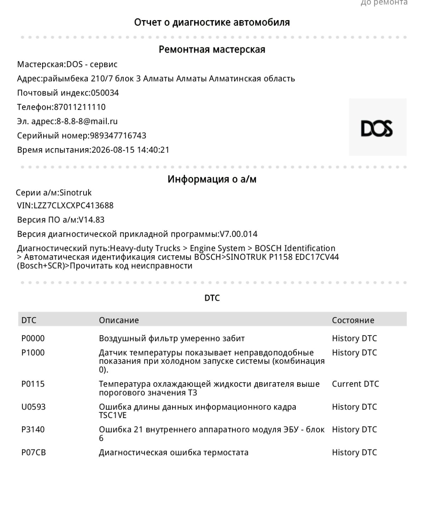
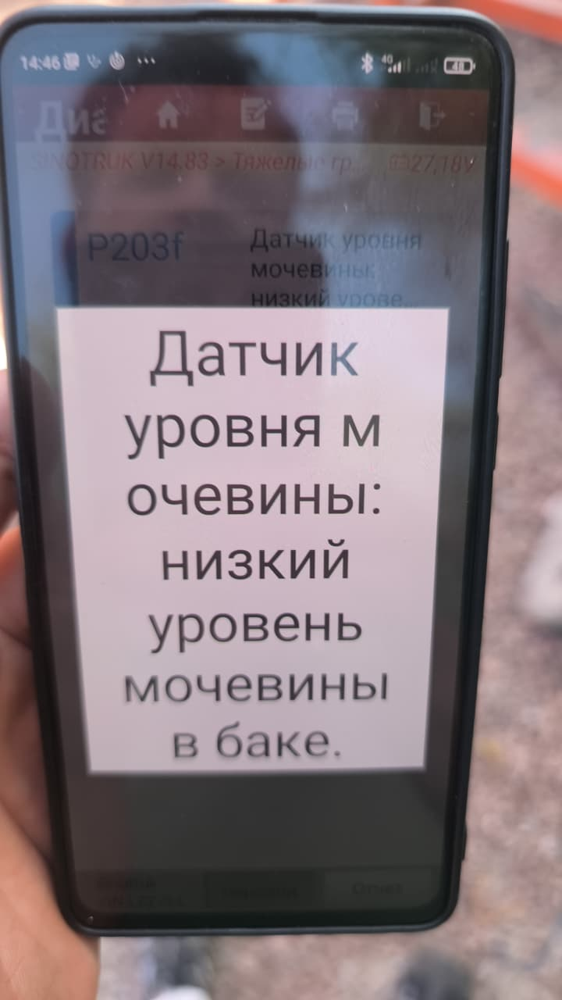
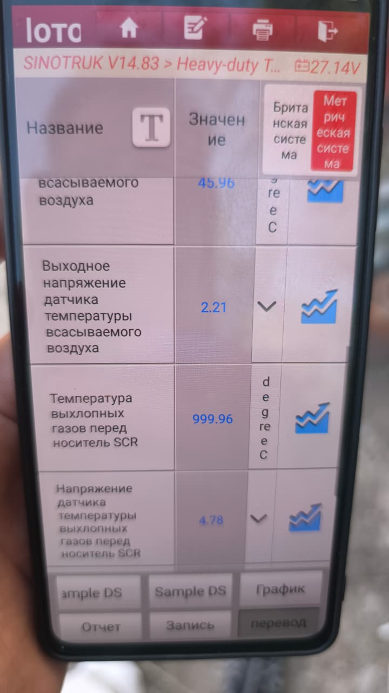
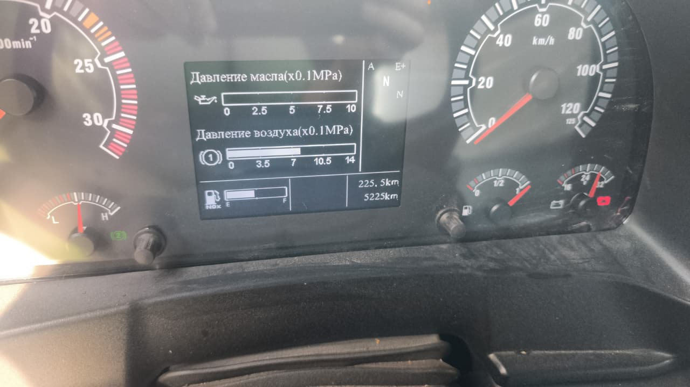

🚛 Sinotruk 2025 — диагностика системы охлаждения, AdBlue и русификация панели приборов
В работу поступил Sinotruk 2025 года выпуска с пробегом всего 5 000 км.
Основной задачей была компьютерная диагностика автомобиля, проверка выявленных ошибок и определение актуальных неисправностей. Дополнительно была жалоба по системе AdBlue / мочевины, а также выполнена русификация щитка приборов.
🔍 Первичная компьютерная диагностика

После подключения диагностического оборудования были обнаружены следующие ошибки:
⚠️ P1000 — датчик температуры показывает неправдоподобные показания при холодном запуске системы.
Сохранённая ошибка.
⚠️ P0115 — температура охлаждающей жидкости двигателя выше порогового значения T3.
Текущая ошибка.
⚠️ U0593 — ошибка длины данных информационного кадра TSC1VE.
Сохранённая ошибка.
⚠️ P3140 — ошибка внутреннего аппаратного модуля ЭБУ, блок 6.
Сохранённая ошибка.
⚠️ P07CB — диагностическая ошибка термостата.
🔄 Сброс ошибок и повторная диагностика
После проведения первичной диагностики ошибки были сброшены, после чего выполнена повторная проверка системы.
После повторной диагностики большинство ранее сохранённых ошибок не появились снова. Осталась только одна актуальная ошибка, связанная с системой автомобиля, которая требовала дальнейшего контроля.
Такой способ диагностики позволяет определить, какие ошибки являются текущими, а какие могли быть сохранены в памяти ранее.
💧 Проверка системы AdBlue

Дополнительно поступила жалоба по системе AdBlue / мочевины.
В процессе проверки было установлено, что причиной предупреждения являлся низкий уровень жидкости AdBlue.
После доливки жидкости система была повторно проверена.
✅ Уровень AdBlue восстановлен.
✅ Предупреждение исчезло.
✅ Ошибка после повторной проверки больше не появилась.
В данном случае проблема была решена без замены дорогостоящих компонентов системы.
🌡️ Проверка системы охлаждения

Во время диагностики особое внимание было уделено ошибкам:
- P1000 — неправдоподобные показания температуры при холодном запуске;
- P0115 — превышение порогового значения температуры охлаждающей жидкости;
- P07CB — диагностическая ошибка термостата.
После сброса ошибок была проведена повторная диагностика для определения актуальной неисправности и дальнейшего контроля работы системы.
🖥️ Русификация щитка приборов

Параллельно с компьютерной диагностикой была выполнена русификация щитка приборов Sinotruk.
После выполнения работ информация на панели приборов стала отображаться на русском языке, что делает эксплуатацию автомобиля и контроль сообщений системы более удобными для водителя.
🛠️ Выполненные работы
В рамках выполненной работы проведено:
✅ полная компьютерная диагностика Sinotruk;
✅ считывание кодов неисправностей;
✅ анализ текущих и сохранённых ошибок;
✅ сброс ошибок;
✅ повторная компьютерная диагностика;
✅ проверка системы охлаждения;
✅ проверка системы AdBlue;
✅ выявление низкого уровня жидкости AdBlue;
✅ долив жидкости и повторная проверка;
✅ русификация щитка приборов.
💡 Важный момент при диагностике
Не каждая ошибка, записанная в памяти электронного блока, означает необходимость немедленной замены датчика, термостата или блока управления.
Особенно на современных грузовых автомобилях важно:
🔹 считать все ошибки;
🔹 определить, какие из них являются текущими;
🔹 проверить параметры соответствующих систем;
🔹 сбросить сохранённые ошибки;
🔹 провести повторную диагностику.
Только после этого можно принимать решение о дальнейшем ремонте.
✅ Результат выполненной работы
На Sinotruk 2025 года с пробегом 5 000 км была проведена комплексная компьютерная диагностика.
После сброса и повторной проверки большинство ошибок не появились повторно. Дополнительная жалоба по системе AdBlue была связана с низким уровнем жидкости — после доливки предупреждение исчезло.
Также параллельно была успешно выполнена русификация щитка приборов.
👨🔧 Компьютерная диагностика и выполненные работы проведены автоэлектриком Олегом.
☎️ 8-701-121-11-10 Олег
Читайте также: «Погрузчика Komatsu 2019 не запускался» и «Комбайн Fendt 2023 не набирал обороты».